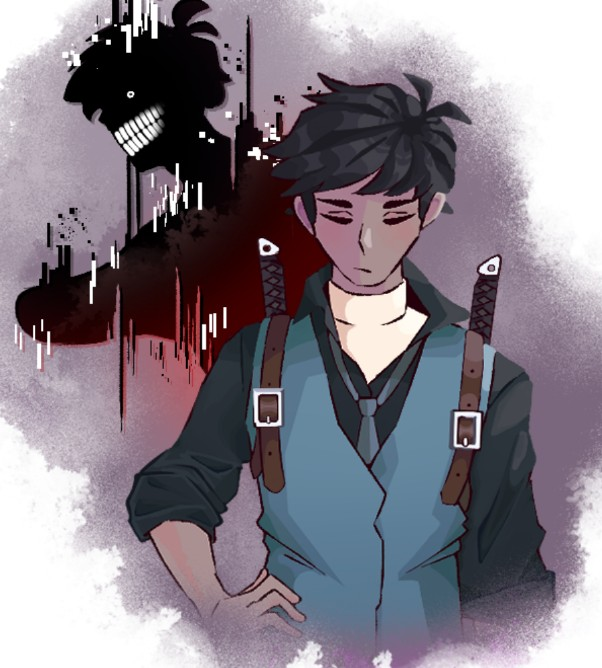

File-003 — Evets
Visual Record:
Taken by the Research Team
Description:
Evets, is a human that seems to be a vessel inhabited by a shadow-like echo made with some kind of wild magic with the name. Discovered twandering the streets of New Omphalos by a squad returning from an investigation, he was taken in as an anomalous entity.
While the vessel seems to be docile, the echo seems to show some kind of aggressiveness, wanting to eat many different types of creatures. There have been many attempts to prevent the echo from snacking on random animals or creatures it finds. Echo shows exceptional strength and is able to retreat into the vessels shadow any time it wants. It is also able to store items and creatures in itself by consuming them.
The vessel itself seems to have been born with one of the old dragonmarks of finding. An ancient dragonmark that grants humans and half-orcs alike enhanced senses and abilities to aid in tracking and locating things.
Containment Protocol:
- None Needed as of late as Creature seems to be cooperative.
Addendum 001-A:
As stated in the incident report Case File 0345-AE, he will be assigned to Squad Team 6.
Addendum 001-B:
As stated in the incident report CCase File 0412-AE, he doesn't seem to be aware of the dog Amon despite having similar magic sources.
Addendum 001-C:
Following Incident stated in Incident Report: Case File 0412-AE, he has been relocated to a new Squad Team 7 under the newly promoted squad captain Noelle.